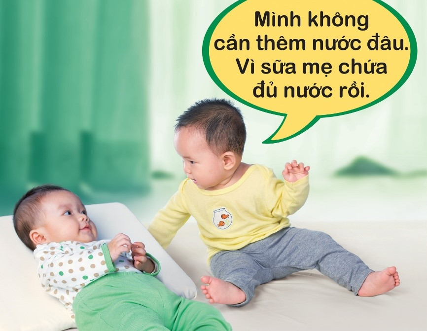

Nguồn nước có thể không sạch và khiến bé bị nhiễm trùng.
Bên cạnh đó, dạ dày của trẻ sơ sinh có dung tích nhỏ, việc cho bé uống thêm nước sẽ làm cho bé bị no và bú mẹ ít đi, hoặc ngưng bú sữa mẹ, từ đó bé kém hấp thu chất dinh dưỡng dẫn đến tình trạng suy dinh dưỡng. Cho bé uống thêm nước sau mỗi cữ bú dễ khiến bé bị ọc hay bị sặc. Mặt khác, nếu các bà mẹ cho con uống nước thay vì bú cũng sẽ khiến mẹ dần ít sữa trong tương lai.

Sữa mẹ chứa hơn 80% là nước, đặc biệt là sữa đầu dòng (sữa đầu mỗi cữ bú). Do đó, bất cứ khi nào người mẹ cảm thấy con mình khát, mẹ có thể cho con bú. Điều này sẽ thỏa mãn “cơn khát” của bé và tiếp tục bảo vệ bé khỏi nguy cơ nhiễm trùng. Bé không cần nước trước khi được 6 tháng tuổi, ngay cả trong điều kiện khí hậu nóng. Đây cũng là một trong những lý do mà Tổ chức Y tế thế giới (WHO) khuyến nghị trẻ nên được bú mẹ hoàn toàn trong 6 tháng đầu đời.
Một đứa trẻ được coi là bú mẹ hoàn toàn khi chỉ nhận được sữa mẹ, không có bất kỳ thức ăn hoặc chất lỏng bổ sung nào, ngay cả nước; ngoại trừ khi trẻ cần dùng thuốc, dung dịch bù nước đường uống, thuốc nhỏ, xi-rô vitamin, khoáng chất theo chỉ định của bác sĩ.
Khi cho con bú nghĩa là mẹ đã cho bé uống tất cả nước mà bé cần, đồng thời cung cấp nước an toàn và bảo vệ bé chống lại bệnh tiêu chảy.
Cho trẻ uống nước với số lượng lớn thậm chí có thể dẫn đến ngộ độc nước uống, đó là tình trạng các chất điện giải (như natri) trong máu của em bé bị pha loãng, ức chế các chức năng cơ thể bình thường và dẫn đến các vấn đề nguy hiểm như nhiệt độ cơ thể thấp hoặc co giật. Vì trẻ dưới 6 tháng tuổi có khối lượng cơ thể thấp, việc uống nước rất dễ khiến vượt nhu cầu Natri bình thường của cơ thể - những khoáng chất và chất điện giải này đã có đủ trong sữa mẹ khi mẹ cho bé bú.
Các tổ chức Y tế trên thế giới khuyên mẹ nên đợi đến khi bé bắt đầu ăn dặm. Tại thời điểm đó, mẹ có thể cung cấp một lượng nhỏ nước đun sôi để nguội nhưng không thay thế sữa mẹ. Bé vẫn nên được cho bú mẹ tiếp tục và kéo dài về sau mà theo khuyến cáo của WHO là nên kéo dài đến 24 tháng để trẻ được phát triển toàn diện.
Nguồn tham khảo: